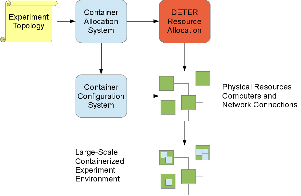

This page describes basic information about DETERLab Containers and provides an overview of how to use it. More details are available in the Containers Guide.
What are Containers?
The Containers system enables experimenters to create large-scale DETERLab topologies that support differing degrees of fidelity in individual elements. In order to create an experiment larger than the 400+ computers available in DETERLab Core, experimenters must use virtualization, simulation, or some other abstraction to represent their topology. The Containers system guides this process allowing experimenters to create large experimental environments that may be used to gather correct results.
The Containers system is built on top of the resource allocation that underlies the DETERLab testbed, extending it to provide multiple implementations of virtual nodes. Most DETERLab tools that run on physical experiments may be used directly on containerized experiments. Experimenters find working in a containerized experiment very similar to working in physical DETERLab experiments.
How does it work?
An experimenter comes to DETERLab with an experimental topology of computers and networks and an experiment to carry out on that topology, and the Containers system allocates resources in the configuration specified. The experimenter may directly access the computers in order to carry out the experiment. The computers themselves are either physical computers or some virtual computers that emulate a computer at an acceptable level of fidelity. Multiple experiments may be in progress at once using DETER resources, and they are protected from interfering with one another.
Containers present researchers with more resources while preserving the DETERLab interfaces. The process of converting a topology description to an isolated collection of networked computers is basically the same as when an experimenter creates a physical topology on DETERLab. The difference is that a containerized experiment is configured to present more experimental resources than physical ones, preserving the DETERLab interface.
A little more completely, the Containers system lays out the virtual computers into a physical layout of computers and uses the resource allocation system to allocate that physical layout. Then the system installs and configures the appropriate virtualization technologies in that environment to create the virtual environment.

As in physical DETERLab experiments, the experiment's topology is written in an extended version of DETER's ns2 syntax, or in topdl, a topology description language.
Currently experimenters pick containers directly using those languages.
Kinds of Containers
A container is a virtualization technology, like a virtual machine implementation. We use the term ''container'' to mean any one of the various virtualization technologies from an openvz container to a physical machine to a simulation. The Containers system gives us a way to create interconnections of containers (in our sense) holding different experiment elements. A containerized topology might include a physical machine, a qemu virtual machine and an openvz container that can all communicate transparently.
The Containers system framework supports multiple kinds of containers, but at this point researchers may request these:
| Container Type | Fidelity | Scalability |
|---|---|---|
| Physical Machine | Complete fidelity | 1 per physical machine |
| Qemu virtual Machine | Virtual hardware | 10's of containers per physical machine |
| Openvz container | Partitioned resources in one Linux kernel | 100's of contatiners per physical machine |
| ViewOS process | Process with isolated network stack | 1000's of containers per physical machine |
How do I use Containers?
In general, once you have a DETERLab account, you follow these steps. The DETERLab Containers Guide will walk you through a basic tutorial of these steps.
1. Design the topology
Every experiment in DETERLab is based on a network topology file written in NS format and saved on the users node. In a containerized experiment, the topology will typically be a large one with more than 400 nodes.
sample of topology
2. Run containerized experiment with the containerize.py command
The Containers system will build the containerized experiment on top of an existing DETERLab physical experiment by running the containerize.py command from the shell on users.isi.deterlab.net, as in the following example:
$ /share/containers/containerize.py DeterTest example1 ~/example1.tcl
where ''DeterTest'' and ''example1'' are the project and experiment name, respectively, of the physical DETERLab experiment and ''example.tcl'' is the topology file.
With these default parameters, containerize.py will put each node into an Openvz container with at most 10 containers per physical node.
3. View results by accessing nodes, modify the experiment as needed.
In a containerized experiment, you can access the virtual nodes with the same directories mounted as in a physical DETERLab experiment. You can load and run software and conduct experiments as you would in a physical experiment.
4. Save your work and swap out your experiment (release the resources)
As with all DETERLab experiment, when you are ready to stop working on an experiment but know you want to work on it again, save your files in specific protected directories and swap-out (via web interface or commandline) to release resources back to the testbed. This helps ensure there are enough resources for all DETERLab users.
More Information
For more detailed information about Containers, read the following:
- Containers Guide - This guide walks you through a basic example of using Containers and includes some advanced topics.
- Containers Reference - This reference includes Containers commands, configuration details and information about different types of containers.